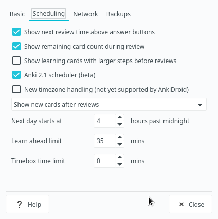
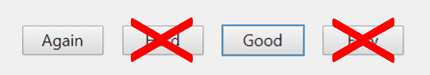
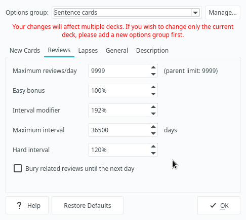
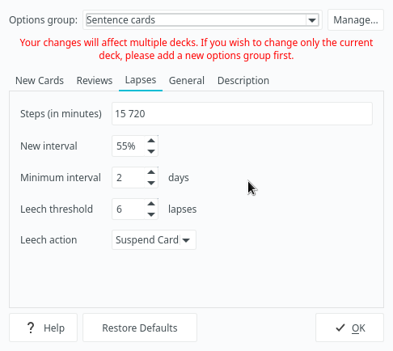

Setting up Anki
Anki is a Spaced repetition system (SRS), a program which allows you to create, manage and review flashcards.
There are currently many different SRS’s available. Mnemosyne is considered to be a good Anki alternative. However, I recommend that you stick with Anki. It’s cross-platform, rich with features, and supports addons, written in python. There are many add-ons available that greatly aid language study, including a few of my own. Because of the add-ons it's in my opinion really the only SRS application worth taking seriously.
What's most important, Anki is libre software that respects the users' freedom and community. Unlike Supermemo, for example. But you can't use that on GNU/Linux and Android anyway.
Many language learners find Anki useful to quickly memorize (frontload) core vocabulary of their target language (TL), as well as boost their learning in the later stages.
It should be noted, however, that memorization of most vocabulary throughout all your language learning phases should be done by studying sentences. You will be making vocabulary cards in the process as well, but much less so, and mostly for nouns.
The only downside of Anki is that it can be a little bit difficult to learn how to use. Depending on how you use it you can either greatly decrease your time spent studying or make using Anki a living hell for yourself. If you find yourself confused about how Anki works, it is recommended that you read the Anki manual. However, because it's highly detailed and technical, the bulk of this article will focus on explaining the most useful Anki settings to help you get things up and running as quickly as possible.
Installation
It's quite simple. Anki is available in the
official repositories.
To install the anki package, run:
$ sudo pacman -S anki
Sync your mobile device
By signing up for Ankiweb you can keep your cards synchronized across multiple machines. You can also sync between devices. Install AnkiDroid on your Android device and sync your collection. This will allow you to review your flashcards when you're outside and don't have access to your computer.
I must warn you in advance though. Don't sync your collection with AnkiWeb
if you are a heavy user of subs2srs.
subs2srs decks take a lot of disk space. Use a different Anki profile to store them.
To make multiple profiles, press File > Switch profile.
Import an example mining deck
After you install Anki, you need to set up a Note Type
to keep your flashcards formatted as you like.
Anki comes with a few basic Note Types but they aren't suited for learning Japanese.
Because making your own Note Type is a tedious process
consisting of essentially adding the fields you need and copy-pasting html and css,
I recommend you to import a pre-made mining deck.
A sample mining deck can be found here:
- AnkiWeb: https://ankiweb.net/shared/info/1557722832
- Mirror: https://t.me/ajatt_tools/16
Japanese language support
Press Tools > Add-ons > Get Add-ons to download and install the
Japanese Support add-on.
Then restart. The add-on is bundled with mecab and the kakasi executables
so you don't need to install any additional dependencies.
Anki settings
I recommend the following settings.
Preferences
You can access preferences by going to Tools > Preferences… on Anki’s main window.
Learn ahead limit: I recommend keeping the value close to the default of 20 minutes. Mine is
35mins. When you finish your daily reviews and new cards, Anki will start ignoring intervals of cards in the learning queuelessthan this value and showing the cards to you right away. This is good for cards with small intervals because it lets you finish your reps without breaking the flow and waiting for your cards to become ready to be reviewed. But if you set theLearn ahead limittoo high cards with longer learning steps will be shown to you too early. Keeping the value on the lower side enforces the wait time of your steps. If you set this to0, Anki will always wait the full delay, so it's not optimal either.Show new cards after reviews: You always want to finish your reviews first, and you don’t want new cards to slow you down. You can choose
Show new cards before reviewsif you are consistent and feel confident that you will never have a backlog of Anki reviews. Mixing is probably the worst way and will confuse you when a new card pops up after a streak of mature cards.Anki 2.1. scheduler: Make sure to enable this one. The old scheduler is buggy and clunky. The new one fixes some of issues that previous Anki versions had, though it's still in development. You can read about it in detail here.
Main killer features:
- You can have subdecks and review all of them at once, the cards will be properly mixed when reviewing.
- You can learn new cards in filtered decks. Filtered decks no longer reset learning steps when rebuilt or emptied.

Options Groups
Each deck has an Options Group attached to it.
The subdeck options will override the parent deck options.
Click Deck > Options to access Options Groups settings.
You can hit Manage to create additional options groups.
Below are the options I recommended using:
New cards
Steps (in minutes): This is the number of times you have to answer
goodon the card before it graduates. I recommend beginners to stick to the default learning steps of1 10. When you get more familiar with Anki you can add your custom steps and experiment with them. But don't overdo it: too many steps will make you spend too much time in Anki for no substantial gain in retention. Thelearn aheadoption set in the previous section will make sure that you won't be shown cards with custom steps too early.New cards/day: The default value of
20cards is very reasonable and manageable for most users. However, if you feel overwhelmed by the amount of reviews you have to do, lower it to about10new cards a day. Doing more cards is also possible if you can keep up with the review load, but generally in the AJATT community it is advised to learn no more than30new cards a day.As you've noticed, I keep my setting at
0. That's simply because I use the Learn now Button add-on to manually pick and learn cards from my Sentence Bank.Starting ease: Set it to
131%and you won't have to worry about Ease at all. Ease is very nasty because by default it gradually decreases when you fail cards or answer Hard on them. This leads to intervals growing slower, and eventually you fall into Ease Hell. If you've been using Anki before applying this setting, you should Refold your collection with the RefoldEase add-on.If you would like to learn more about Ease Hell, check out this video.
Note: If you previously used the old
Low Key Ankisetup described on the MIA site, make sure to disable Anki add-ons associated with it, namelyNo Penalties or BoostingandResetEZ, because they modify Ease of your cards in a way that conflicts with these instructions. You can keepPassFailinstalled if you want.

Reviews
Maximum reviews/day: This value sets an arbitrary cap on the amount of reviews you can do each day. If the cap is low, your due cards won't magically disappear after you've done with the reviews. Instead they will form a backlog of likely forgotten cards. Because you want to review all your due cards every day, set this at a high value.
Interval modifier: Now here is where it gets interesting. When you answer Good on a card, its interval is recalculated:
New interval = current interval * Card's ease * Interval ModifierThe default next interval is 250% of last interval. At its default of 100%
Interval Modifierdoes nothing. However, you don't want that because you've just loweredStarting Easeto 131% in the previous step. To restore the balance bumpInterval Modifierup to 192%. Later after you've used Anki for a couple of months and have had high retention, you can increase the value further and do less reviews. If you forget too many cards, it is recommended to lower it a bit.If you've used the RefoldEase add-on from the previous step, your
Interval Modifiershould be already set to the right value.Easy bonus and Hard interval: Ignore these settings as you should never use the “hard” and “easy” buttons.

As I mentioned in the
Starting easesection, the “hard” and “easy” buttons have counterintuitive effects on Anki’s algorithm, which causes long-term problems with Ease of your cards.Maximum interval: Intervals of your cards can never increase beyond this limit. I advice setting it as big as possible. The default is
36500days, which is equal to100years. However, you can decrease this to a smaller number if you want to ensure long-term retention.

Lapses
Steps (in minutes): Works similar to the setting in the
New Cardstab, except it’s for cards you’ve pressed “Again” on. It affects how well you will relearn your lapsed cards. Beginners should set one learning step and observe their experience. The default of10minutes is okay but I prefer a slightly bigger one. Later you can experiment with more learning steps.New interval: You often still somewhat remember a word in Japanese even if you fail it. A different context or another word, or studying it on a different day may jog your memory. Thus we don’t need to fully penalize a fail here.
I use a new interval of 55% so as to not completely reset a card to 0. The recommended range in the AJATT community is between 50 and 75%.
For a word cards deck you may set it to about 30-40% because word cards are noticeably harder than sentence cards.
Leech threshold and Leech action: Keep the leech threshold low (4-6 lapses) and suspend the cards when they become leeches. You have to properly deal with leeches instead of letting them rotate in your deck and slow you down.
Possible ways to deal with leeches:
Delete them: For those small minority of cards that just won’t stick, it’s best to just get rid of them. Instead of wasting a bunch of time on a single leech, it’s more productive to learn 5 normal cards in its place.
Keep them for later: If you can't remember a word after 4-5 lapses, it means that your brain hasn't been primed yet to acquire it. Wait a month or two and try again. Often you'll find that cards that wouldn't stick before had become very easy.
Make a new card for the same target word: If a word is of high value to you, you can try to memorize a different representation of it. Find a different example sentence in your Sentece Bank or online. For example, on weblio.

Read next: Useful Anki add-ons for Japanese
Tags: anki